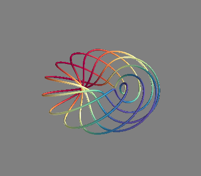
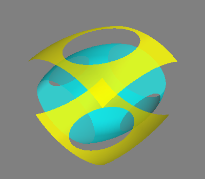
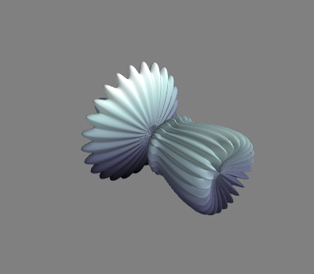
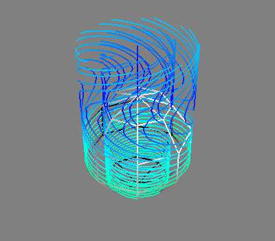

Note
Click here to download the full example code or to run this example in your browser via Binder
Plotting simple 3D graph with Mayavi¶
A simple example of the plot of a 3D graph with Mayavi in order to test the autonomy of the gallery.
# Code source: Alex Gramfort
# License: BSD 3 clause
# This will show the mlab.test_mesh figure in the gallery
# sphinx_gallery_thumbnail_number = 4
from mayavi import mlab
mlab.test_plot3d()
mlab.figure()
mlab.test_contour3d()
- 
- 
<mayavi.modules.iso_surface.IsoSurface object at 0x7f44488296d0>
Note: this shows that inside a cell matplotlib figures are always put before mayavi in the example HTML. In other words, the order of plotting is not respected between matplotlib and mayavi figures
mlab.figure()
mlab.test_mesh()
mlab.figure()
mlab.test_flow()
import matplotlib.pyplot as plt
plt.plot([1, 2, 3], [1, 2, 3])

- 
- 
[<matplotlib.lines.Line2D object at 0x7f444094cf70>]
Total running time of the script: ( 0 minutes 3.175 seconds)
Estimated memory usage: 132 MB